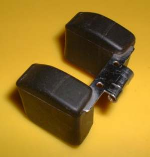
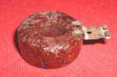
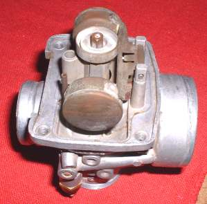
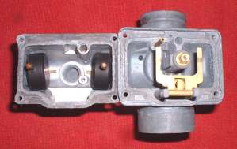
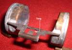
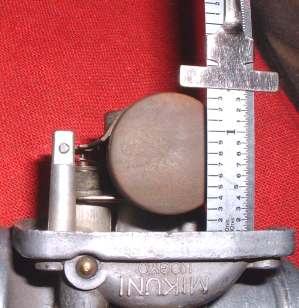
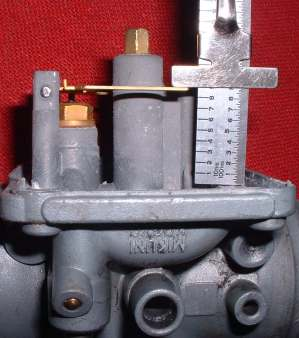
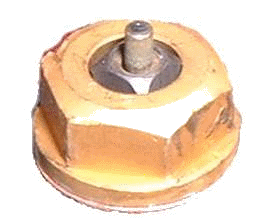

¶

Carburetor Floats. They... well... Ah... float. Floats can be made out of metal or plastic or both. Back in the day they made them out of cork. Your Shop Manual will give you the correct height for each Carburetor. The Shop Manual will also tell you if you measure the Float height with or without the gasket. If you do not drain your Carburetors for winter you run the risk of water in your fuel freezing and crushing your Floats. Nothing like Gasohol to suck in that water. Think of it as the government's giving you one more reason to Winterize your engines.Floats can be one piece or two piece. The theory being two piece Floats help keep a more accurate level when accelerating, decelerating and cornering.
 One Piece Float |
 Two Piece Float |

If you have double Floats you usually just make sure the Float lever is parallel with the Carburetor gasket surface. As always, check your Shop Manual.
 Float Level Set Single Float |
 Float Level Set Double Float |

 |
 |
Copyright © 1999-2015 dansmc.com. All rights reserved.